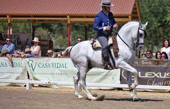
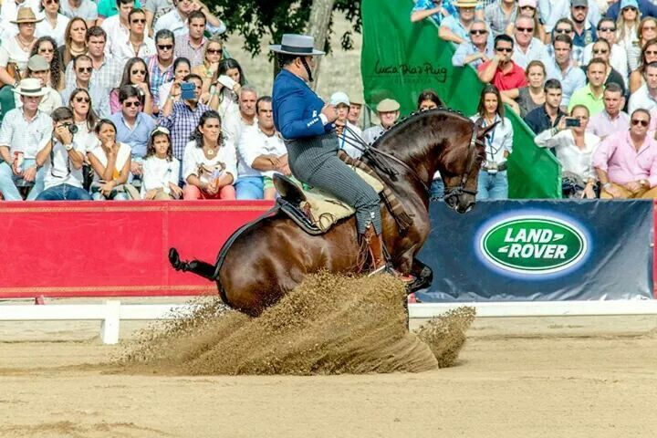

"Cliente"
Rafael Arcos es uno de los clientes mas comunes , el se lleva productos tanto para el como para sus caballos.Aqui en esta foto va equipado totalmente con Gruarnicioneria Lira

"Campeonato Andalucia 2016"
En el campeonato de Andalucia de 2016 nosotros equipamos durante todo el concurso a los caballos de Rafael Arcos , esta foto fue en la final con el caballo 'Curro' y la montura y el cabezal es nuestro, en este campeonato quedaron 2º de Andalucia en doma vaquera.
